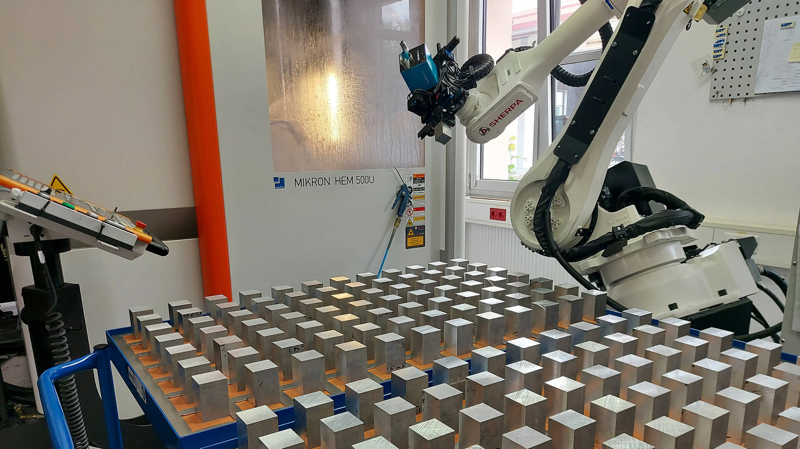

Allein ist man gut, als Team unschlagbar
Seit 2003 fertigen wir in Markt Schwaben Präzisionsteile für Medizintechnik, Maschinenbau und optische Industrie.
Ein Familienbetrieb, der weitergegeben wurde
Die Firma Hermann Schöbel CNC Frästechnik GmbH wurde am 30. Mai 2003 durch Herrn Hermann Schöbel gegründet. Von Anfang an verfolgte das Unternehmen das Ziel, sich als zuverlässiger Partner zu etablieren und höchste Qualitätsstandards zu setzen. Durch kontinuierliche Investitionen in moderne Technologien und die stetige Weiterentwicklung der Fertigungsprozesse gelang es Hermann Schöbel, sich als langjähriger Partner für eine Vielzahl von Kunden zu positionieren.
Mit einem starken Fokus auf Präzision und Effizienz hat sich das Unternehmen im Laufe der Jahre einen herausragenden Ruf in der Lohnfertigung erarbeitet und bleibt auch weiterhin stolz darauf, innovative Lösungen für die individuellen Anforderungen seiner Kunden zu bieten. 2022 wurde das Unternehmen von Herrn Martin Herzog und Johannes Seilbeck übernommen.

Allein ist man gut, als Team unschlagbar.
Leitsatz bei Schöbel CNC
Unsere Mitarbeiter sind nicht nur Arbeitskräfte, sondern essentielle Mitgestalter unseres Erfolgs. Wir schaffen eine Umgebung, die Kreativität und persönliches Wachstum fördert.
Die Fähigkeiten unserer hochqualifizierten Fachkräfte, ihr Engagement und ihre langjährige Erfahrung im Bereich Zerspanung sind der Schlüssel zu unserem Wettbewerbsvorteil. Gerne bieten wir Ihnen auch eine professionelle Beratung für Ihre Projekte an und garantieren durch unsere Expertise für qualitativ hochwertige Ergebnisse.
Woran wir uns messen lassen
Innovation
Innovation und technologischer Fortschritt sind Eckpfeiler unserer Unternehmung. Wir investieren kontinuierlich in hochmoderne CNC-Technologien und Automation, um nicht nur mit der Zeit Schritt zu halten, sondern sie aktiv mitzugestalten.
Nachhaltigkeit
Wir sind uns unserer Verantwortung gegenüber der Umwelt und der Gesellschaft bewusst. Nachhaltige Fertigungspraktiken und Ressourceneffizienz sind integraler Bestandteil unseres Handelns.
Flexibilität
Die Welt verändert sich ständig, und wir passen uns an. Unsere Flexibilität ermöglicht es uns, uns schnell an neue Anforderungen, Technologien und Marktbedingungen anzupassen. Wir sehen Veränderungen als Chancen.
Exzellenz
Die ständige Suche nach Exzellenz treibt uns an. Jedes gefertigte Teil trägt die Handschrift unseres Engagements für Qualität und Präzision. Wir sind stolz auf unsere Produkte, was uns anspornt, dieses hohe Niveau zu halten.
Von der Gründung bis heute
Über zwanzig Jahre kontinuierlicher Ausbau von Maschinenpark, Automation und Qualitätssicherung.
-
200330. Mai
Firmengründung
Hermann Schöbel gründet die CNC Frästechnik GmbH in Markt Schwaben.
-
2006
Umzug in ein größeres Gebäude
Mit dem neuen Standort wächst auch der Maschinenpark.
-
2008
Erstes 3-Achs-Bearbeitungszentrum
Der Einstieg in die eigene Bearbeitung größerer Bauteile.
-
2011
Einführung der CAM-Programmierung
Bearbeitungen entstehen ab jetzt softwarebasiert statt an der Maschine.
-
2014
5-Achs-Bearbeitungszentrum mit Simultanbearbeitung
Komplexe Freiformflächen lassen sich nun in einer Aufspannung fertigen.
-
2018
Erweiterung der Produktionsstätte
Dazu kommt eine Trowalisierungsanlage für die Oberflächenbearbeitung im Haus.
-
202115. Oktober
Einführung der Roboter-Automation
Die Fertigung läuft ab jetzt auch außerhalb der Schicht weiter.
-
20221. Oktober
Firmenübernahme
Martin Herzog und Johannes Seilbeck übernehmen das Unternehmen.
-
202325. Mai
Einführung ISO 9001
Die Prozesse werden nach dem internationalen Qualitätsstandard zertifiziert.
-
202330. Mai
Zwanzigjähriges Firmenjubiläum
Zwei Jahrzehnte Zerspanung in Markt Schwaben.
-
20231. Juni
Maschinenzuwachs Hermle C22 Dynamic
Inklusive Roboter-Automation Sherpa M25 für die mannlose Serienfertigung.
-
20257. April
Neue Koordinatenmessmaschine
Eine Mitutoyo CRYSTA-APEX erweitert die Qualitätssicherung im Haus.
Zwei, die den Betrieb führen
Seit dem 1. Oktober 2022 führen Martin Herzog und Johannes Seilbeck das Unternehmen. Beide sind im Tagesgeschäft erreichbar, für Anfragen ebenso wie für konstruktive Rückfragen zu Ihren Bauteilen.
Martin Herzog
GeschäftsführerJohannes Seilbeck
GeschäftsführerNach ISO 9001 zertifiziert
Wir legen größten Wert auf Qualitätssicherung. Unsere Prozesse sind nach den neuesten Standards zertifiziert. Dadurch stellen wir sicher, dass jede Komponente, die unsere Fertigung verlässt, höchsten Qualitätsansprüchen genügt. Wir sind stolz darauf, nach ISO 9001 zertifiziert zu sein.
- ISO 9001:2015 für spanabhebende Bearbeitung von Metallen und Kunststoffen sowie Baugruppenmontage
- Mitutoyo CRYSTA-APEX Koordinatenmessmaschine seit 2025
- Blum Laser und Renishaw zur Werkzeugvermessung
- Messtaster zur Bauteilvermessung in jeder Maschine
- Simulation jeder Bearbeitung an der virtuellen Maschine
Wir suchen Verstärkung für unser Team
Zum nächstmöglichen Zeitpunkt suchen wir eine Zerspanungsmechanikerin oder einen Zerspanungsmechaniker, Feinwerkmechanik oder vergleichbar, in Vollzeit. Schwerpunkt 5-Achs- und 3-Achs-Fräsen.
Dein Aufgabenbereich
- Herstellung von Präzisionsteilen an CNC-Maschinen
- Programmieren von NC-Programmen mittels CAM-Software hyperMILL oder Heidenhain-Steuerung. Erfahrung mit einem CAM-System ist wünschenswert, aber keine Bedingung
- Qualitätssicherung der gefertigten Bauteile
- Materialbereitstellung, Zuschnitt, Werkzeugverwaltung, Maschinenwartung
- Eigenverantwortliches Betreuen von CNC-Maschinen
- Einrichten von Roboteranlagen, Programmerstellung und Rüsten der Automationen
Was wir bieten
- Überdurchschnittliche Vergütung, Urlaubs- und Weihnachtsgeld
- 30 Tage Urlaub, keine Schichtarbeit
- Wochenendbeginn freitags ab 12:00 Uhr
- Hohe Eigenverantwortung und sehr flache Strukturen
- Moderner Maschinenpark mit vollautomatisierten Produktionsmaschinen
- Abwechslungsreiche Tätigkeiten und gründliche Einarbeitung
- Sehr gutes Betriebsklima in einem stark wachsenden Unternehmen
- Freie Getränke und regelmäßige gemeinsame Mittagessen
Kontaktieren Sie uns unkompliziert und unverbindlich, gerne per Telefon oder E-Mail.
Erhalten Sie in unter 24 Stunden Ihr Angebot
Senden Sie uns eine Zeichnung als PDF sowie die 3D-Daten zum gewünschten Bauteil. Ihre Daten verwenden wir ausschließlich für die Prüfung der Machbarkeit und die Kalkulation Ihres Auftrags.